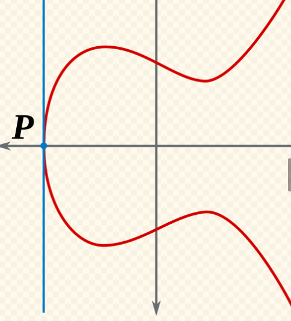

Chapter 2: 타원곡선
Abstract
비트코인 서명과 검증에 사용하는 타원곡선 암호의 기반이 되는 수학 개념인 타원곡선을 이해하고 Go 언어로 타원곡선의 점 덧셈을 구현해 본다.
타원곡선의 정의
y2 = x3 + ax + b

secp256k1
secp256k1은 비트코인에서 사용되는 타원곡선이다. 다음과 같이 정의된다.
y2 = x3 + 7

타원곡선 점 덧셈
두 점 P와 Q를 지나는 직선이 타원곡선과 만나는 교점을 x축으로 대칭시킨 점을 P+Q로 정의합니다.

타원곡선의 점 덧셈은 비선형 연산 입력의 변화가 출력에 비례하지 않는 연산을 의미한다. 으로, 결과를 쉽게 예측할 수 없다
점 덧셈 성질
점 덧셈은 일반 덧셈과 유사한 다음과 같은 성질을 만족한다.
- 항등원 존재 항등원이란 a에 대해 a + 0 = a가 되게 하는 원소 0을 의미한다.
- 역원 존재 역원이란 a에 대해 a + b = 0이 되게 하는 원소 b를 의미한다.
- 교환법칙 성립 덧셈에 대해 a + b = b + a가 성립하는 것을 의미한다.
- 결합법칙 성립 덧셈에 대해 (a + b) + c = a + (b + c)가 성립하는 것을 의미한다.
무한원점 I
A + (-A) = I

x축과 수직인 직선과 만나는 두 점의 덧셈의 결과인 점은 영원히 그래프와 만나지 않는다. 그 점을 무한대의 값을 갖는 무한원점이라고 정의한다.
I + A = A
무한원점은 타원곡선에서 0과 같은 항등원이다.
x1 ≠ x2인 경우의 점 덧셈
P1 = (x1, y1), P2 = (x2, y2), P3 = (x3, y3)이고 기울기가 s일때 다음과 같다.
- s = (y2 - y1) / (x2 - x1)
- x3 = s2 - x1 - x2
- y3 = s(x3 - x1) - y1
증명
기울기: s = (y2 - y1) / (x2 - x1)
두 점을 지나는 직선: y = s(x - x1) + y1
타원곡선: x32 + ax3 + b
직선은 타원곡선과 세 점에서 만나므로 직선을 타원곡선에 대입하면 다음을 얻습니다.
y22 = (s(x - x1) + y1)2 = x32 + ax3 + b
모든 항을 미지수 x의 차수에 따라 한쪽으로 모아 내림차순으로 정리하면 다음을 얻습니다.
x32 - s2x2 + (a + 2s2x1 - 2sy1)x + b -s2x12 + 2sx1y2 - y12 = 0
x1, x2, x3는 이 방정식을 만족하는 근이므로 다음과 같이 나타낼 수 있습니다.
(x - x1)(x - x2)(x - x3) = x32 - (x1 + x2 + x3)x2 + (x1x2 + x1x3 + x2x3)x - x1x2x3 = 0
근이 같은 두 방정식에서 x의 같은 차수의 계수들은 서로 같아야 합니다. x2의 계수를 비교하여 다음을 얻습니다.
s2 = x1 + x2 + x3
x3 = s2 - x1 - x2
그리고 이렇게 구한 x3을 직선에 대입하면 -y3를 구할 수 있습니다. y3를 구하기 위해 부호를 반대로 설정해 줘야 함에 주의합니다.
y3 = s(x1 - x3) - y1
P1 = P2인 경우의 점 덧셈

곡선 위의 동일한 두 점을 이은 직선은 그 점에서의 접선을 의미합니다. 따라서 동일한 두 점의 점 덧셈 결과를 구하기 위해 접선이 곡선과 만나는 다른 교점을 찾아야 합니다.
- s = (3x12 + a) / (2y1)
- x3 = s2 - 2x1
- y3 = s(x1 - x3) - y1
증명
타원곡선을 미분하여 도함수를 구하면 접선의 기울기 공식을 구할 수 있습니다.y2 = x3 + ax3 + b
양변을 미분하면 다음을 얻습니다.
2y2 dy = (3x22 + a) dx
dy / dx = (3x22 + a) / (2y2)
구한 기울기 공식에 x1과 y1을 대입하면 기울기 s를 구할 수 있습니다.
s = (3x12 + a) / (2y1)
P1 = P2이면 y가 0인 경우
두 점이 같으면서 y가 0인 경우에 분모가 0이 되어 기울기를 구할 수 없습니다. 이 경우에는 무한원점을 반환하도록 예외 처리를 해줍니다.
Go 언어로 타원곡선의 점 덧셈 구현
이제 위에서 배운 타원곡선의 점 덧셈 이론을 Go 언어로 구현해보겠습니다. 코드를 기능별로 나누어 설명하겠습니다.
1. 기본 구조체와 생성자
먼저 타원곡선의 점을 나타내는 구조체와 생성 함수를 구현합니다.
package main
import (
"fmt"
"math"
)
// 타원곡선의 점 구조체
type Point struct {
x, y, a, b float64
}
// 타원곡선의 점을 생성하는 함수
func NewPoint(x, y, a, b float64) (*Point, error) {
// 무한원점인지 확인
if isInfinity(x, y) {
return &Point{x: x, y: y, a: a, b: b}, nil
}
// 주어진 점이 타원곡선 위에 있는지 확인
if !isOnCurve(x, y, a, b) {
return nil, fmt.Errorf("(%.2f, %.2f) is not on the curve", x, y)
}
return &Point{x: x, y: y, a: a, b: b}, nil
}
// 타원곡선의 점 문자열 반환
func (p *Point) String() string {
// 무한원점인지 확인
if isInfinity(p.x, p.y) {
return "Point(infinity)"
}
return fmt.Sprintf("Point(%.2f, %.2f)_%.2f_%.2f", p.x, p.y, p.a, p.b)
}설명:
-
Point구조체는 타원곡선 위의 점을 나타내며, x, y 좌표와 타원곡선의 계수 a, b를 포함합니다. -
NewPoint함수는 점을 생성할 때 타원곡선 위에 있는지 검증합니다. String()메서드는 점을 문자열로 표현합니다.
2. 유틸리티 함수들
점 덧셈에 필요한 기본적인 유틸리티 함수들을 구현합니다.
// 무한원점인지 확인하는 함수
func isInfinity(x, y float64) bool {
return x == math.MaxFloat64 && y == math.MaxFloat64
}
// 타원곡선 위에 있는지 확인하는 함수
func isOnCurve(x, y, a, b float64) bool {
return y*y == x*x*x+a*x+b
}
// 두 점이 서로 역원인지 확인하는 함수
func areInverse(x1, x2, y1, y2 float64) bool {
return x1 == x2 && y1 != y2
}
// 두 타원곡선이 같은지 확인하는 함수
func sameCurve(a1, b1, a2, b2 float64) bool {
return a1 == a2 && b1 == b2
}
// 두 점이 같은지 확인하는 함수
func samePoint(x1, y1, x2, y2 float64) bool {
return x1 == x2 && y1 == y2
}
// 두 타원곡선의 점이 같은지 확인 함수
func (p *Point) Equals(other *Point) bool {
// 두 점의 좌표가 같고 같은 타원곡선 위에 있는지 확인
return samePoint(p.x, p.y, other.x, other.y) &&
sameCurve(p.a, p.b, other.a, other.b)
}
// 두 타원곡선의 점이 다른지 확인 함수
func (p *Point) NotEquals(other *Point) bool {
return !(samePoint(p.x, p.y, other.x, other.y) &&
sameCurve(p.a, p.b, other.a, other.b))
}설명:
-
isInfinity: 무한원점을math.MaxFloat64로 표현하여 확인합니다. -
isOnCurve: 점이 타원곡선 방정식 y² = x³ + ax + b를 만족하는지 확인합니다. -
areInverse: 두 점이 x좌표는 같고 y좌표는 다른 역원 관계인지 확인합니다. -
Equals,NotEquals: 두 점의 동등성을 비교합니다.
3. 점 덧셈 케이스 분류
점 덧셈을 수행하기 전에 어떤 케이스에 해당하는지 분류하는 로직을 구현합니다.
// 점 덧셈 케이스를 나타내는 열거형
type AdditionCase int
const (
InfinityPoint AdditionCase = iota
InversePoints
SamePoints
DifferentPoints
)
// 점 덧셈 케이스를 결정하는 함수
func determineAdditionCase(p, other *Point) AdditionCase {
// p가 무한원점인 경우
if isInfinity(p.x, p.y) {
return InfinityPoint
}
// other가 무한원점인 경우
if isInfinity(other.x, other.y) {
return InfinityPoint
}
// 한 점의 역원을 더하는 경우
if areInverse(p.x, other.x, p.y, other.y) {
return InversePoints
}
// 같은 점인 경우
if samePoint(p.x, p.y, other.x, other.y) {
return SamePoints
}
// 서로 다른 점인 경우
return DifferentPoints
}설명:
-
AdditionCase: 점 덧셈의 4가지 케이스를 정의합니다. -
determineAdditionCase: 두 점의 관계를 분석하여 적절한 케이스를 결정합니다. - 케이스 우선순위: 무한원점 → 역원 → 같은 점 → 서로 다른 점
4. 점 덧셈 메인 로직
이제 실제 점 덧셈을 수행하는 메인 함수를 구현합니다.
// 두 타원곡선의 점을 더하기
func (p *Point) Add(other *Point) (*Point, error) {
// 같은 타원곡선 위에 있는지 확인
if !sameCurve(p.a, p.b, other.a, other.b) {
return nil, fmt.Errorf("points %s and %s are not on the same curve", p, other)
}
switch determineAdditionCase(p, other) {
case InfinityPoint:
// case1: 무한원점 처리
if isInfinity(p.x, p.y) {
return other, nil
}
return p, nil
case InversePoints:
// case2: 역원인 경우, 무한원점을 반환
return NewPoint(math.MaxFloat64, math.MaxFloat64, p.a, p.b)
case SamePoints:
// case3: 같은 점인 경우 (점의 두 배)
// 예외 처리: 접선이 x축에 수직인 경우, 무한원점을 반환
if p.y == 0 {
return NewPoint(math.MaxFloat64, math.MaxFloat64, p.a, p.b)
}
// 접선의 기울기 구하기
s := (3*p.x*p.x + p.a) / (2 * p.y)
// 접선과 타원곡선의 교점의 좌표 구하기
nx := s*s - 2*p.x
ny := s*(nx-p.x) + p.y
// 교점의 y축 대칭
ny = -ny
return NewPoint(nx, ny, p.a, p.b)
case DifferentPoints:
// case4: 서로 다른 점인 경우
// p와 other를 지나는 직선의 기울기 구하기
s := (other.y - p.y) / (other.x - p.x)
// p와 other를 지나는 직선이 타원곡선과 만나는 다른 한 점의 좌표 구하기
nx := s*s - p.x - other.x
ny := s*(nx-p.x) + p.y
// p와 other의 점 덧셈의 결과의 y축 대칭
ny = -ny
return NewPoint(nx, ny, p.a, p.b)
default:
return nil, fmt.Errorf("unexpected addition case")
}
}설명:
- Case 1 (무한원점): 무한원점은 항등원이므로 다른 점을 그대로 반환합니다.
- Case 2 (역원): 역원끼리 더하면 무한원점을 반환합니다.
- Case 3 (같은 점): y=0인 경우 예외 처리합니다.
- Case 4 (서로 다른 점)
5. 테스트 및 실행
func main() {
p1, _ := NewPoint(-1, -1, 5, 7)
fmt.Println(p1)
p2, _ := NewPoint(2, 5, 5, 7)
fmt.Println(p2)
fmt.Println(p1.Equals(p2))
fmt.Println(p1.NotEquals(p2))
p3, _ := NewPoint(1, 4, 8, 7)
fmt.Println(p3)
p4, _ := NewPoint(-1, 1, 5, 7)
fmt.Println(p4)
inf, _ := p1.Add(p4)
fmt.Println(inf)
p5, _ := p1.Add(p2)
fmt.Println(p5)
p6, _ := p1.Add(p1)
fmt.Println(p6)
}실행 결과
Point(-1.00, -1.00)_5.00_7.00
Point(2.00, 5.00)_5.00_7.00
false
true
Point(1.00, 4.00)_8.00_7.00
Point(-1.00, 1.00)_5.00_7.00
Point(infinity)
Point(3.00, -7.00)_5.00_7.00
Point(18.00, 77.00)_5.00_7.00